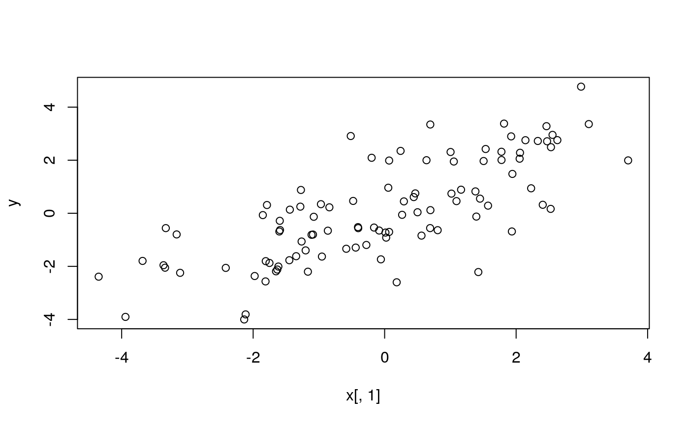
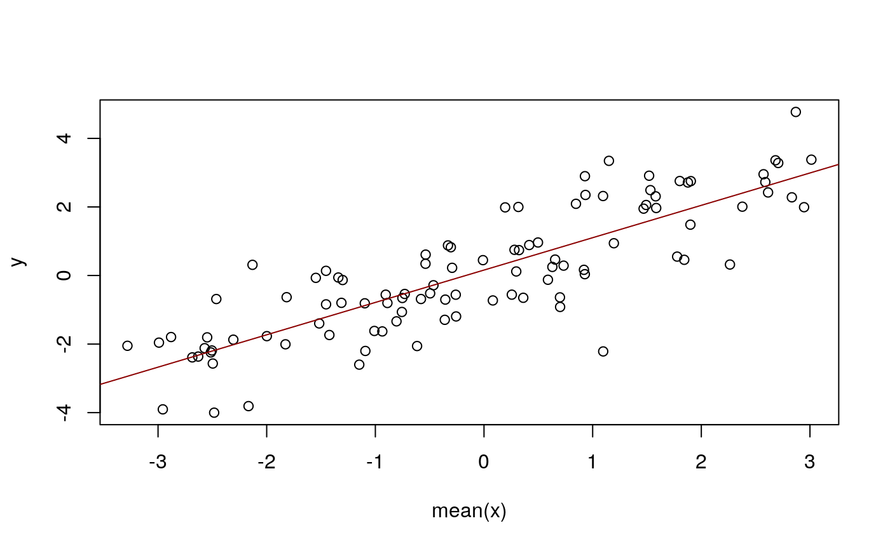

linear_model.Rmdn <- 100
k <- 25
x_mean <- runif(n, -3, 3)
d <- data.frame(
y = rnorm(n, mean = x_mean)
)
d$x <- as_ensemble(
replicate(k, rnorm(n, mean = x_mean))
)
rm(x_mean)
dim(d)## [1] 100 2head(d)## y x.1 x.2 x.3 x.4
## 1 0.7495511 0.466367446 -0.410621658 -0.492494659 -0.355881329
## 2 2.9114310 -0.515419081 2.270819869 1.684029152 1.471577629
## 3 0.1367743 -1.441629996 -0.684635381 -2.882339593 -3.137192855
## 4 0.4481684 0.292955798 -0.443387917 -0.865559766 -1.479855294
## 5 -0.5589251 -3.328464098 -2.400926220 -1.264660579 0.493436214
## 6 -1.3372438 -0.583709977 -1.064321536 0.337464457 0.272071927
## x.5 x.6 x.7 x.8 x.9
## 1 -0.385592374 0.720419359 2.344846377 0.782821276 -0.310370663
## 2 0.939211260 1.510652320 2.553699695 2.750483758 2.382083781
## 3 -2.444575833 0.378596510 -0.619278311 -0.609778234 -0.672273417
## 4 1.051827223 -0.528019879 1.703660298 -0.433478869 -0.843093259
## 5 -0.854503765 -1.598400219 -0.021659751 -1.117515400 0.480480068
## 6 0.266517005 -1.828907704 -0.187777808 -2.089588595 -0.350044883
## x.10 x.11 x.12 x.13 x.14
## 1 1.103304690 0.610173370 -1.905507141 0.296815324 -0.220387060
## 2 -0.771774120 2.674728626 1.478468320 -0.648614167 1.835103989
## 3 -0.798618934 -2.479836789 0.360769952 -3.777406910 -1.114737109
## 4 0.594840340 0.261241195 0.383445550 -2.821176816 -0.768561878
## 5 0.425996544 -0.746612200 -1.017736437 -1.241725195 0.796396131
## 6 0.246501993 -2.699766282 -1.090748947 -2.271233268 -1.785904238
## x.15 x.16 x.17 x.18 x.19
## 1 -0.887840540 1.830134920 0.765866126 1.106302855 0.003098516
## 2 -0.412639337 2.047751359 1.489483743 3.466664353 0.624397310
## 3 -0.785514905 -1.290313683 -2.042486232 -2.010648881 0.006620662
## 4 0.890321285 0.276496091 0.666854012 -0.747644740 0.771209188
## 5 -0.842296622 -0.976325695 -2.034117208 -0.543595929 -0.853821444
## 6 -0.916838710 0.480464023 -1.214001966 0.562044720 0.552942664
## x.20 x.21 x.22 x.23 x.24
## 1 1.612903693 -0.597022548 -0.294526588 0.174114356 0.163200854
## 2 2.156730928 2.104270776 2.258721201 0.682732278 1.493308980
## 3 -2.182791488 -1.848411770 -2.577808698 -2.202301432 -0.989429416
## 4 0.463576388 0.121880158 0.648866431 0.225657218 -0.268436481
## 5 -1.317596008 -1.631354851 -1.521890573 -0.669260718 -0.474857907
## 6 0.135565697 -0.836863027 0.293735925 -1.284521546 -2.928109476
## x.25
## 1 0.896139400
## 2 2.464721985
## 3 -0.506919823
## 4 0.604215981
## 5 -0.354596524
## 6 -2.148650636plot(y ~ x[, 1], data = d)
##
## Call:
## lm(formula = y ~ mean(x), data = d)
##
## Residuals:
## Min 1Q Median 3Q Max
## -3.4098 -0.5559 0.0068 0.7216 2.1636
##
## Coefficients:
## Estimate Std. Error t value Pr(>|t|)
## (Intercept) 0.15943 0.10179 1.566 0.121
## mean(x) 0.94415 0.06133 15.395 <2e-16 ***
## ---
## Signif. codes: 0 '***' 0.001 '**' 0.01 '*' 0.05 '.' 0.1 ' ' 1
##
## Residual standard error: 1.017 on 98 degrees of freedom
## Multiple R-squared: 0.7075, Adjusted R-squared: 0.7045
## F-statistic: 237 on 1 and 98 DF, p-value: < 2.2e-16abline(fm, col = "darkred")